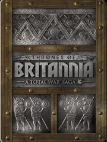

A Total War Saga: Thrones of Britannia
A Total War Saga: Thrones of Britannia
Detalles
|  | |
| Tiempo de juego | 9h 53m 0s |
| Última actividad | 16/08/2023 14:23:14 |
| Añadido | 30/08/2023 9:58:46 |
| Modificado | 30/08/2023 10:01:52 |
| Estado de finalización | Jugado |
| Librería | Steam |
| Fuente | Steam |
| Plataforma | PC (Windows) |
| Fecha de lanzamiento | 02/05/2018 |
| Puntuación de la Comunidad | 69 |
| Puntuación de la Crítica | 76 |
| Puntuación de usuario | |
| Género | Action Strategy |
| Desarrollador | Creative Assembly Feral Interactive (Linux) Feral Interactive (Mac) |
| Editor | Feral Interactive (Linux) Feral Interactive (Mac) SEGA |
| Característica | Achievements Co-Op LAN Co-Op LAN Pvp Multi-Player Online Co-Op Online Pvp Pvp Single Player |
| Enlaces | Punto de encuentro Discusiones Guías Noticias Página de la tienda PCGamingWiki Logros |
| Tag | Action Atmospheric City Builder Co-op Grand Strategy Historical Medieval Military Multiplayer rts Sandbox Singleplayer Strategy Tactical Turn-based Turn-based Strategy Vikings War |
Descripción
A Total War™ Saga: Thrones of Britannia
The year is 878 AD, the embattled English king Alfred the Great has mounted a heroic defence at the battle of Edington, and blunted the Viking invasion. Chastened – but not yet broken – the Norse warlords have settled across Britain. For the first time in nearly 80 years, the land is in a fragile state of peace.

Throughout this sceptred isle, the kings of England, Scotland, Ireland and Wales sense a time of change approaching; a time of opportunity. There will be treaties. There will be war. There will be turns of fortune that become the stuff of legend, in a saga that charts the ascent of one of history’s greatest nations.
Kings will rise. One will rule.
Thrones of Britannia is a standalone Total War game which will challenge you to re-write a critical moment in history, one that will come to define the future of modern Britain. With ten playable factions, you must build and defend a kingdom to the glory of Anglo-Saxons, Gaelic clans, Welsh tribes or Viking settlers. Forge alliances, manage burgeoning settlements, raise armies and embark on campaigns of conquest across the most detailed Total War map to date.

Choose your strategy
The Grand Campaign offers multiple routes to a glorious Victory; aggressively expand your territory through force of arms, acquire renown through construction, advanced technology and influence, or complete a series of unique objectives based on your chosen faction’s history. Once completed, steady yourself for a significant late-game challenge and the final, Ultimate victory condition.
Explore and conquer the British Isles
From the snowy highlands of Scotland to the orchards and meadows of Kent, push back the fog-of-war and unveil the extent of Anglo-Saxon Britain. Varied towns, cities and rural settings inspire a host of different battlefield environments. Experiment with the strategic opportunities afforded by newly capturable minor settlements. Throttle your enemies’ trade routes and coax them out of strong, defensible positions.
Viking warlord or Anglo-Saxon king, define their legend
Each faction will face a series of unique events and branching dilemmas, often based on authentic historical events and issues of the time. Embark on Viking expeditions, manage the Anglo-Saxon peasant economy, each faction feels and plays differently. Carve out unique roles for your King and Nobles, customise their impact by making meaningful choices about their development and determine how their story will unfold.
‘Classic’ Total War gameplay refined
Includes many updates to core Total War mechanics - such as provinces, politics, technologies, recruitment, dilemmas and much more - designed to make your experience more immersive and more meaningful.
Playable factions, cultures and kings:
Thrones of Britannia will include ten playable factions, from five cultures, with a summary below.
The Anglo Saxons – West Seaxe and Mierce
When Roman rule in England concluded, new kingdoms of Germanic stock coalesced in the counties now known as Northumbria, Mercia, Wessex, Essex, Sussex, East Anglia and Kent. The peoples of these regions came collectively to be known as the Anglo Saxons.

West Seaxe
Faction Leader: King Alfred
As the dominant Anglo-Saxon kingdom of southern England, the forces of West Seaxe – or Wessex in modern English – provided the isle’s primary resistance against the incursions of the Great Heathen Army. From the capital city of Winchester, Wessex conquered lands in Surrey, Sussex, Kent, Essex and even Mercia. Alfred’s dogged defense of the Danish invasion laid the foundations for Wessex to unite England under one ruler for the first time in 927 AD.
Mierce
Faction Leader: Ceowulf
From its capital city of Tamworth, the kings of Mierce – known now as Merica - ruled the area now known as the Midlands. At its height, Mierce stretched from Northumbria in the north of England to Kent, Sussex and Wessex to the south. In 877 AD, the Great Heathen Army seized the eastern part of the kingdom to form the Danelaw, or East Engle.
The Gaels – Mide and Circenn
Gaelic culture initially developed in Ireland, their society built around a system of clans and chieftains. They raided and traded with Roman settlements, and by 878 AD had expanded from Ireland to inhabit much of Scotland.
With the influx of the Vikings, some raiders settled in Gaelic lands, becoming the Norse-Gaels. The Scottish Gaels would absorb the Picts to become the Kingdom of Alba – essentially setting the blueprint for modern Scotland.
Mide
Faction Leader: King Flann Sinna
Mide lies at the heart of Ireland. Not just geographically, but politically, intellectually and spiritually. Many High Kings have risen from Mide, and its current ruler, Flann Sinna, aspires to that title.
With many fellow Irish factions nearby, Mide is in a position to potentially bring the disparate clans together, and usher in an era of Irish prosperity. However, threats are never far away… the Vikings of Dyflin have settled to the east, and their power and influence are growing. Will Mide strive to keep the uneasy peace? Unite the clans in a war against these Norse settlers? Or find some other route to supremacy?
Circenn
Faction Leader: Áed mac Cináeda
Circenn was in origin Pictish, but became more heavily influenced by the Gaels and other peoples over time as they were driven away from the relentless Viking raids. 878 AD marked the end of the Viking invasions, but Circenn’s troubles were far from over. While she had a firm hold over the eastern coast of Scotland, many threats still exist – both within and without.
Scoan, the capital of Circenn, was once home to the legendary Stone of Destiny, said to bestow divine strength on her people. Where the stone now resides is a mystery, but if clues can be found, surely the Stone’s recovery would be an adventure worth undertaking…
The Welsh – Gwined and Strat Clut
The Welsh Kingdoms descended from the Celtic Britons who occupied much of the island of Britain from the Iron Age, into and beyond its Romanisation in the First Century.
Ironically, the term ‘Welsh’ derives from the Anglo-Saxon term for foreigner, ‘wealas’, which they applied to the native Britons. The Anglo-Saxons flourished and many of the old Brittonic kingdoms began to disappear.
Gwined
Faction Leader: King Anaraut
The people of Gwined have some claim to the title of 'true Britons', having been driven to the far west by invaders who now call themselves ‘English’. Renowned both for their bardic arts and their skill with the longbow, the Welsh of Gwined thrived under the leadership of Rhodri Mawr.
Rhodri kept Gwined largely free of Vikings and other invaders while expanding its borders. Now he is gone and his lands are divided.
Strat Clut
Faction Leader: Run
Strat Clut is a kingdom of the Old North that can be traced back to the Fifth Century and the Celtic Britons. The realm was formerly based at the fortress of Alt Clut but driven out by a Viking invasion in 870. The current King Artgal was taken captive and reportedly killed in mysterious circumstances. The kingdom reformed further into the valley of the River Clyde under the leadership of his only son Run.
The Great Viking Army – Northymbre and East Engle
In 865 AD, Ragnar’s sons led the Great Viking Army and made landfall in East Anglia. Over the next 15 years the Vikings ranged high and low, from Wessex to The Clyde, conquering towns, claiming victories and suffering their share of defeats until the Battle of Edington in 878 AD, where its leader Guthrum met his match in the young King Alfred and his West Saxon army. Bested in the field, his forces retreated in disarray to a nearby fortress. Flush with success, Alfred’s men gave chase and laid siege. After a fortnight of starvation, the invaders surrendered.
Under the terms of his capitulation, Guthrum was baptised into Christianity and he and his men were allowed to return to East Anglia and settle – provided they kept Alfred’s peace, of course.
Defeated, but never humbled, the Vikings seethe with an all-consuming rage. One does not cage the wolf without consequence…
Northymbre
Faction Leader: Guthfrid
When the Vikings arrived in Northumbria in 867 AD, they took the city of York – or Eoferwic, as was – for their stronghold. And what a bastion it was, with its formidable Roman walls still standing strong 700 years on. King Aelle of Northumbria attempted to wrest the city back from the Danes, but was captured during the attack. In retribution for Aelle’s execution of their father, the sons of Ragnar made an example of him with the horrifying Blood Eagle ritual.
Northumbria remained under Viking control and, after the battle of Edington and the subsequent treaty of Wedmore, a portion of the Great Viking Army marched back to Northumbria, to settle under Alfred’s peace.
East Engle
Faction Leader: Guthrum
Forming the bulk of Britannia’s south-easterly coast, East Engle was the staging-point of the Great Viking Army’s invasion, and the region where many of its warriors settled after the Battle of Edington. Under the rule of the Danish leader Guthrum (or Æthelstan, to use his adoptive name by Alfred) it would ultimately come to be known as the Danelaw.
Yet still, some fight remains in the Danes of East Engle. One does not shed the mantle of glory and become a landsman overnight.
The Viking Sea Kings – Dyflin and Sudreyar
After nearly a century of escalating raids, the Vikings left an indelible stamp on Britannia, altering the course of its history forever. Not least of all culturally, as many smaller bands of Vikings had settled around the isles prior to Alfred’s defeat of the Great Viking army.
These smaller factions traded an existence of ceaseless conflict for a new life in Britannia, establishing their own petty principalities, intermarrying and ultimately becoming part of the warp-and-woof of Britannic life. This mingling of cultures, so emblematic of British history, helped create the rich melting-pot of attitudes, beliefs and language that has made the isles and their people so unique.
Some Vikings never truly settled however; their designs were grander, their hunger for conquest and greatness unquenched. These Sea Kings would continue their bellicose work, heedless of any decree from England’s upstart ruler…
Dyflin
Faction Leader: Bardr
Dyflin was a major port town on the east coast of Ireland, and the site of Britannia’s largest slave market. It was a major site of Viking occupation, and was ruled until 873 by the Viking lord Imar, often associated with Ivar the Boneless, a son of the legendary Viking warlord Ragnar Lothbrok. Viking raiders had wintered there as early as 840 AD, so their association with the region had been a long one, and over time their customs began to take on a more Gaelic flavour as the slow process of integration took its course.
By 878 AD however, Imar’s son Bardr was firmly established on the throne. Would this ambitious Viking ruler seek to seal a lasting peace with the surrounding Gaelic factions? Or return to the ways of Ragnar, and pursue a path of bloodshed and domination? It is hard to ignore the calling of one’s warrior-blood…
Sudreyar
Faction Leader: Eirik
To the west of Alba lies Sudreyar, the Kingdom of the Southern Isles. Comprising the southern Hebrides, these scattered islands were sparsely populated and, bearing the full brunt of the Atlantic weather, were not lands suited to the less-hardy.
Like much of Britannia, these islands saw increasing Viking contact from the 8th Century. Prior to this period they formed part of the Gaelic kingdom of Dalriada, until they fell under Viking control. Over the next century, Scandinavian occupancy took on a distinctly Gaelic flavour (and vice-versa), particularly after 872 AD when Harald Fairhair became king of Norway, and his former opponents flocked to the area.
Materially poor, but offering an excellent base for those of a nautical bent, the isles of Sudreyar are a perfect staging-post for raiders and explorers.